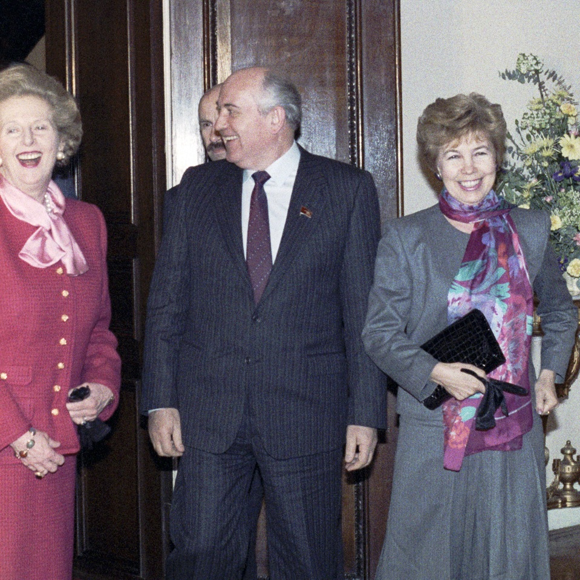

The Fall of the Berlin Wall
“Walls in people's heads are sometimes more durable than walls
made of concrete blocks.”
- Willy Brandt, at the first meeting of the all-German parliament at the
Reichstag in December 1990.
"Fall der Berliner Mauer"
The fall of the Berlin Wall was a pivotal event in world history which marked the falling of the Iron Curtain and the start of the fall of communism in Eastern and Central Europe. The fall of the inner German border took place shortly afterwards. An end to the Cold War was declared at the Malta Summit three weeks later, and the reunification of Germany took place in October the following year.
A date: 9.11.1989
Removal of the Wall began on that evening
By Skäpperöd - Own work, CC BY-SA 3.0.
Removal of the Wall began on the evening of 9 November 1989 and continued over the following days and weeks, with people nicknamed Mauerspechte (wallpeckers) using various tools to chip off souvenirs, demolishing lengthy parts in the process, and creating several unofficial border crossings.
Official demolition
By Bundesarchiv, Bild 183-1990-0105-029 / Reiche, Hartmut / CC-BY-SA 3.0, CC BY-SA 3.0 de.
On 13 June 1990, the East German Border Troops officially began dismantling the Wall. Virtually every road that was severed by the Berlin Wall, every road that once linked from West Berlin to East Berlin, was reconstructed and reopened by 1 August 1990.
The result of an accident
The wall was breached as a result of an accident. The East German government were producing a new set of regulations to make it easier for East Germans to travel, using visas. The intention was to announce the changes on the evening of 9 November, and introduce the new system the next morning. However, when Günter Schabowski, a member of the East German Politburo who served as its spokesman, was asked at a live press conference when the new rules would come into effect, he blundered and said ‘immediately’. Shortly after this surprise development, hundreds of East Berliners started to turn up at the sector crossing points – the crowds swelled into thousands. The GDR border guards were normally under orders to stop anyone crossing. They had no fresh instructions, and decided spontaneously to open the barriers, enabling thousands to pour through.
"Mr. Gorbachev, tear down this wall!
Ronald Reagan, in West Berlin on June 12, 1987
Reagan then made his speech at the Brandenburg Gate at 2:00 pm, in
front of two panes of bulletproof glass. Among the spectators were West German President Richard von
Weizsäcker, Chancellor Helmut Kohl, and West Berlin Mayor Eberhard Diepgen.
That afternoon, Reagan said:
"... General Secretary
Gorbachev, if you seek peace, if you seek prosperity for the Soviet Union and Eastern Europe, if you seek
liberalization, come here to this gate. Mr. Gorbachev, open this gate. Mr. Gorbachev...Mr. Gorbachev, tear
down this wall!"
By Unknown author or not provided - U.S. National Archives and Records Administration, Public Domain.
Ronald Reagan, Public domain, via Wikimedia Commons.
International opposition
RIA Novosti archive, image #778094 / Yuryi Abramochkin / CC-BY-SA 3.0, CC BY-SA 3.0, via Wikimedia Commons.
French President, François Mitterrand, and British Prime Minister, Margaret Thatcher, both opposed the fall
of
the Berlin Wall and the eventual reunification of Germany, fearing potential German designs on its
neighbours using its increased strength.
In September 1989, Margaret Thatcher privately confided
to Soviet
General Secretary Mikhail Gorbachev that she wanted the Soviet leader to do what he could to stop
it.
"We do not want a united Germany. This would lead to a change to postwar borders and we cannot allow that
because such a development would undermine the stability of the whole international situation and could
endanger our security," Thatcher told Gorbachev.
10th anniversary celebrations and a memorable piece of music!
On 9 November 1999, the 10th anniversary was observed with a concert and fireworks at the vid Brandenburg Gate. Russian cellist Mstislav Rostropovich played music by Johann Sebastian Bach, while German rock band Scorpions performed their 1990 song Wind of Change. Wreaths were placed for victims shot down when attempts to escape to west, and politicians delivered speeches.
Other celebrations and anniversaries:
- On 25 December 1989, Leonard Bernstein gave a concert in Berlin celebrating the end of the Wall, including Beethoven's 9th symphony (Ode to Joy) with the word "Joy" (Freude) changed to "Freedom" (Freiheit) in the lyrics sung
- On New Year's Eve 1989, David Hasselhoff performed his song "Looking for Freedom" while standing atop the partly demolished wall.
- Roger Waters performed the Pink Floyd album The Wall just north of Potsdamer Platz on 21 July 1990, with guests including Bon Jovi, Scorpions, Bryan Adams, Sinéad O'Connor, Cyndi Lauper, Thomas Dolby, Joni Mitchell, Marianne Faithfull, Levon Helm, Rick Danko and Van Morrison.